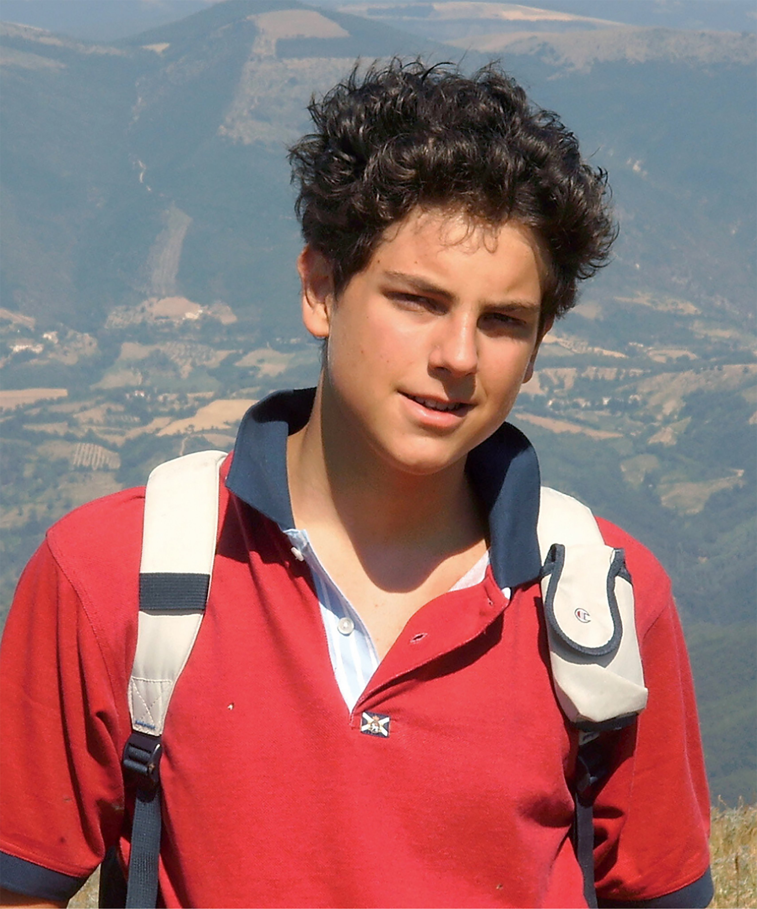

"Todos nascem como originais, mas muitos morrem como fotocópias." — Carlo Acutis
Ainda não previsto | Todo o dia
Ainda não previsto | Acampamento
Junho | O dia inteiro
Registros dos momentos especiais que vivemos em comunidade, em oração e em missão.
1 de novembro de 2025
A Festa de Todos os Santos celebra a santidade como um chamado para todos nós. Foi uma noite de muita alegria, marcada por danças, músicas, comidas e brincadeiras. Entre risadas e momentos de convivência, os jovens puderam se aproximar de Deus de forma leve e verdadeira, reconhecendo que a santidade também se vive na alegria e na comunhão.
7 de Setembro de 2025
Um dia histórico para a Igreja e para a juventude. A Santa Missa de canonização foi marcada por profunda fé, gratidão e alegria, celebrando o testemunho de um jovem que mostrou ao mundo que a santidade é possível também nos dias de hoje.
30 e 31 de agosto
Um retiro marcado pela alegria e pela presença de Deus. Com o tema “Jovem, resgate sua originalidade!”, os participantes viveram dias intensos de emoções, oração, danças e partilhas, redescobrindo o valor de serem quem Deus os chamou para ser.
Participe dos nossos encontros smensais e eventos especiais. Todos são bem-vindos!
Tema: Encontro com a Família
Destinado a: Comunidade
Local: Paróquia São João Batista
Horário: Domingo, 8:00h

Carlo Acutis (1991-2006) foi um jovem italiano beatificado em 2020, conhecido como o "cyber-apóstolo da Eucaristia". Desde criança demonstrou profunda devoção a Jesus Eucaristia, frequentando diariamente a Santa Missa.
"A Eucaristia é minha estrada para o céu."
"Todos nascem como originais, mas muitos morrem como fotocópias."
Carlo utilizou seus talentos com computadores para evangelizar, criando sites sobre milagres eucarísticos e santos. Ele mostra que a tecnologia pode ser um meio para servir a Deus e ao próximo.
Carlo Acutis nos ensina que a santidade é possível na vida cotidiana, no uso positivo da tecnologia e no amor profundo à Eucaristia. Como jovens do século XXI, somos chamados a seguir seu exemplo.
Registros de momentos marcantes de fé, alegria, convivência e missão vividos pela Geração Carlo Acutis.
Venha fazer parte da Geração Carlo Acutis. Estamos te esperando!
São João Batista
Av. Europa, 220 - Jardim Camanducaia - Amparo - SP
Encontros: Sábado, 20:00h
Localização da Paróquia São João Batista
Av. Europa, 220 - Jardim Camanducaia - Amparo - SP